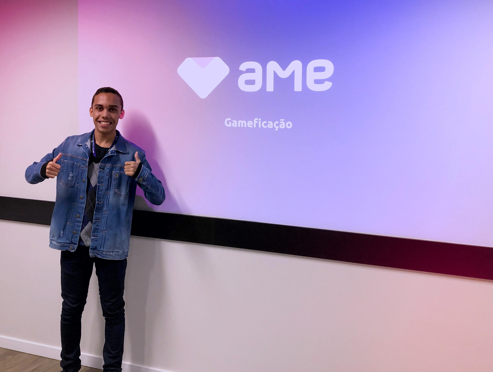

About
Technologist at Fatec Carapicuíba, where I had the opportunity to do database monitoring. I currently work as a full Front-end developer at americanas s.a. where I started through the BIT SP 2019 internship program. I'm studying an MBA in project management at USP with the aim of developing as a tech/team lead in the future.
Frontend Developer
With more than 3 years of experience, working in multiple teams
- Age: 23
- Degree: MBA project management (2022 - currently)
- Email: gabriel.silva.nogueira@outlook.com
I worked with financial applications and credit products, having acquired a broad knowledge in business rules
Skills
I have knowledge in different development technologies and programming languages focused on web
Resume
Sumary
Gabriel Nogueira
Dedicated and attentive Front End developer with more than 3 years of experience participating in all phases of development in a collaborative way and meeting deadlines.
- Osasco, SP
- gabriel.silva.nogueira@outlook.com
Education
MBA project management
2022 - currently
USP Esalq, SP
The course Project Management USP/Esalq goes beyond technical skills and also develops interpersonal and leadership skills and business vision, characteristics that make all the difference for an effective project professional.
Technologist of Digital Games and Programming
2017 - 2019
FATEC Faculdade de Tecnologia, Carapicuíba, SP
Responsible for developing the base code, mechanics and graphic elements of the game (colors, styles, compositions, artistic concepts, aesthetics) and gameplay characteristics, setting, plot and characters.
Technician in business
2015 - 2016
ETEC, Osasco, SP
During the course I was able to develop resource management skills marketing, human, financial, material and productive performing administrative routines, controlling materials, monitoring levels of efficiency and productivity and providing customer service. Working as a team, optimizing resources, proposing innovations and adopting an ethical posture in conducting relationships and activities.
Professional Experience
Full Developer
2021 - Present
Americanas S.A, Sao Paulo, SP
I was promoted to full developer, my responsibilities increased as new challenges arose, I was able to learn unit tests, new methodologies and work tools, even publishing an article.
Jr Developer
2019 - 2021
Americanas S.A, Sao Paulo, SP
After the end of the internship, I was hired as a Junior Developer working as a Front-end in the financial team of Marketplace responsible for the development and maintenance of applications. I participated in multiple teams working in a squad model where I developed skills with project management and scrum.
Intern
2019 - 2019
Americanas S.A, Sao Paulo, SP
The internship program was the opportunity I had been waiting for to develop myself professionally and acquire the necessary foundation to become a software developer. During this period I was able to learn a little about all areas of the company and experience the development of different projects working with multiple business teams.

Monitor
2018 - 2018
FATEC Faculdade de Tecnologia, Carapicuíba, SP
During this period as a monitor, I was able to help different students in the development of projects, which needed to use a database. Many of the students who approached me had questions about modeling and prototyping diagrams, while others wanted to know more about DBMS and servers for hosting.